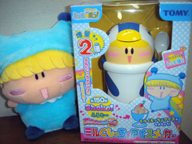
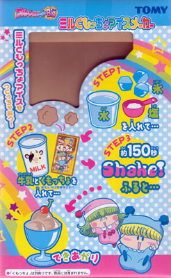
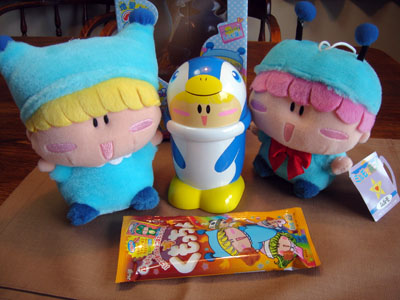
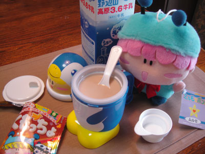
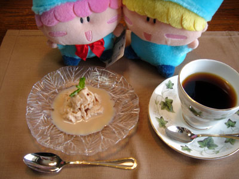
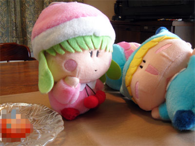

トミーから７月２１日に発売された『ミルくもっちょアイスメーカー』。ちょっと時間が経ちましたが、私も実際にアイスミルくもっちょを作ってみました。アニメでもミルモが宣伝(?)する場面がありましたが、果たしてお味のほどは！？
その前に簡単に商品の紹介をしますね。ミルくもっちょアイスメーカーはトミーが誇る「フルキャラアイスBig」シリーズの１つ。したがって出来上がるアイスには期待が持てますね(^^)。アイスが出来る仕組みは「水に塩をかけて溶けた水が、－２０℃近くになるという反応を利用して、アイスやシャーベットを作ります！」とのことですが、詳しいアイスの作り方は↓の箱の写真を参照で（手抜き）。

それではここからはミルモくん主演で実際にアイスミルくもっちょを作っていただきます。今回使用したくもっちょは、第５弾の「くもっちょバナナ風味」です。

ミルモ「オレ様がアイスミルくもっちょを作る日がとうとうやってきたぜぃ！」
ムルモ「ほぇ、このメーカーとくもっちょでアイスを作るんでしゅね」
ミルモ「おう！オレ様に似てなかなかクールなデザインじゃね～か！」
ムルモ「そうでしゅね（なんかカッコ悪いでしゅ）」

ミルモ「氷、塩、水を入れてと・・・」
ムルモ「お兄たま、塩を使いすぎでしゅよ」
ミルモ「いいんだよ！これでも説明書通りなんだよっ」
ミルモ「アルミカップに牛乳とくもっちょを入れて・・・」
ムルモ「わぁ、牛乳がくもっちょ色に変わってきたでしゅ～」
（注釈）
・写真の右下に写っている計量カップにたっぷり塩を入れます(^^;。
・牛乳に入れたくもっちょは完全には溶けず、残った飴の固まりは除去しました。
・この後はひたすらシェイクします(笑)。
説明書は１５０秒とありましたが、心配性な私は５分以上もシェイクしました。

ミルモ「じゃ～ん、アイスミルくもっちょコーヒーセットの完成～♪」
ムルモ「ちっ、お兄たまのくせに成功するなんて・・・」
ミルモ「ん？何か言ったか？
ではいっただっきま～す。う～ん、甘ぇ～～」
ムルモ「ボクも食べたいでしゅ」
ミルモ「オレが食べ終わったらムルモにも食べさせてやるからなぁ♪」
（注釈）
・１回で出来上がる量は結構少なめ。
これでも従来のフルキャラアイスより1.5倍増量ですが…。
・アルミカップの中心部はアイスがあまり固まっていませんでした(^^;。
・想像通りのくもっちょ味。かなり甘いです。

ミルモ「ふ～、食った、食った」
リルム「ミルモ様～。
わたくしもアイスミルくもっちょを使ってオリジナルアイスを作ってみましたわ～」
ミルモ「んげっ、なななんだそれは！
どうやったらそんなアイスが作れるんだ～！？」
リルム「そんなにお褒めいただけるなんて光栄ですわ♪
くもっちょの他にもたくさんレシピがあるので、
皆さんもぜひいろいろチャレンジしてみてくださいですわ～」
実は写真撮影に手間取って１回アイスミルくもっちょ作りに失敗してたりと、苦労が多かった今回の撮影会。皆さんもぜひ一度はチャレンジしていただけたらと思います(^^)。
(2005/9/6)